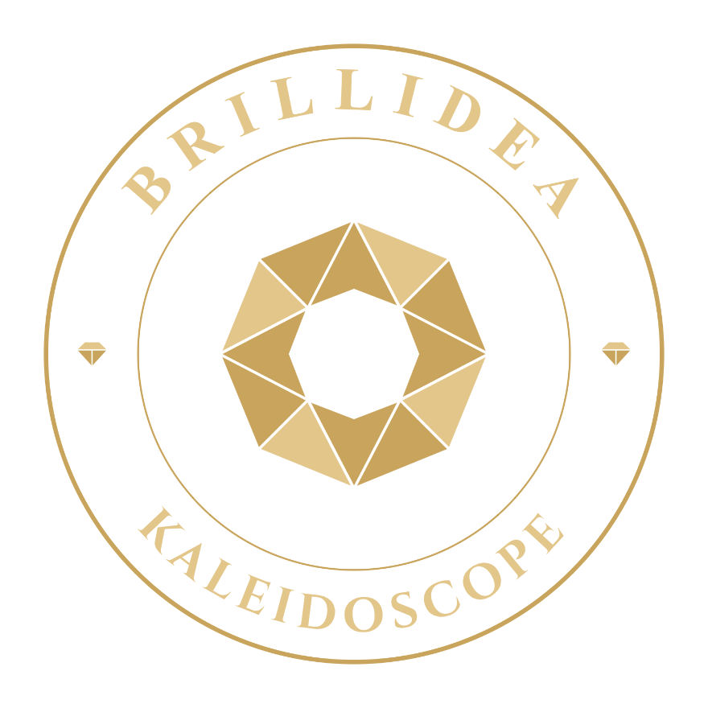

KALEIDOSCOPE
Have you ever seen music?
Tap to begin ♪
© András Bánky
KALEIDOSCOPE
Music, as you’ve never seen it.
Try it free
bandras1949.github.io/kaleidoszkop
again
© András Bánky
promó v17 · logó felirattal · azonnali indítás